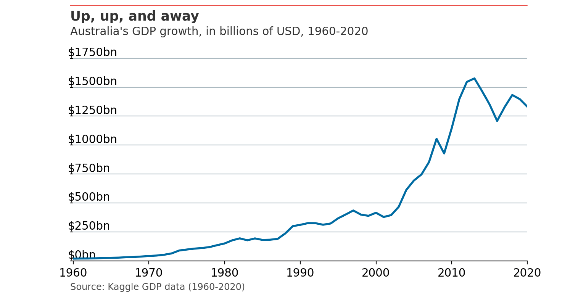

Chapter 6 Time series
Almost all economic, finance, and business related data sets are measured over time (e.g. revenues, profits, margins, stock prices etc).
Therefore the ability to both work with - and manipulate - dates and times becomes critical in using python for analysis.
The book Coding for Economists has a wonderful explanation of the basics behind time series, time zones, and creating a date object from a string input.
import matplotlib.pyplot as plt
import matplotlib.dates as mdates
import pandas as pd
import numpy as np
import statistics
from scipy.stats import norm
from matplotlib.ticker import EngFormatter, StrMethodFormatter
gdp = pd.read_csv('data/gdp_1960_2020.csv')
# The GDP numbers here are very long. To make them easier to read we can divide the GDP number by 1 billion.
gdp['gdp_billions'] = gdp['gdp'] / 1_000_000_000
# Convert the year to datetime
gdp['date'] = pd.to_datetime(gdp['year'], format='%Y')
# Filter for Australia
aus_gdp = gdp[gdp.country == "Australia"]
aus_gdp.tail()Now that we’ve imported, filtered, and set up the data, let’s put it on a chart.
# Setup plot size.
fig, ax = plt.subplots(figsize=(8,4))
# Create grid
# Zorder tells it which layer to put it on. We are setting this to 1 and our data to 2 so the grid is behind the data.
ax.grid(which="major", axis='y', color='#758D99', alpha=0.6, zorder=1)
# Plot data
ax.plot(aus_gdp['date'],aus_gdp['gdp_billions'],
color='#006BA2',
linewidth=2)
# Remove splines. Can be done one at a time or can slice with a list.ax.spines[['top','right','left']].set_visible(False)
# Shrink y-lim to make plot a bit tigheter
ax.set_ylim(0, 1950)
# Set xlim to fit data without going over plot areaax.set_xlim(pd.datetime(1960, 1, 1), pd.datetime(2020, 1, 1))
# Reformat x-axis tick labelsax.xaxis.set_tick_params(labelsize=11) # Set tick label size
# Reformat y-axis tick labels
ax.set_yticklabels(np.arange(0,2000,250), # Set labels again
ha = 'left', # Set horizontal alignment to right
verticalalignment='bottom') # Set vertical alignment to make labels on top of gridline ax.yaxis.set_tick_params(pad=2, # Pad tick labels so they don't go over y-axis
labeltop=True, # Put x-axis labels on top
labelbottom=False, # Set no x-axis labels on bottom
bottom=False, # Set no ticks on bottom
labelsize=11) # Set tick label size
#ax.yaxis.set_label_position("left")
ax.yaxis.tick_left()
ax.yaxis.set_major_formatter('${x:1.0f}bn')
# Add in line and tag
ax.plot([0.12, .9], # Set width of line
[.98, .98], # Set height of line
transform=fig.transFigure, # Set location relative to plot
clip_on=False,
color='#E3120B',
linewidth=.6)
# Add in title and subtitleax.text(x=0.12, y=.93, s="Up, up, and away", transform=fig.transFigure, ha='left', fontsize=13, weight='bold', alpha=.8)ax.text(x=0.12, y=.88, s="Australia's GDP growth, in billions of USD, 1960-2020", transform=fig.transFigure, ha='left', fontsize=11, alpha=.8)
# Set source textax.text(x=0.12, y=0.01, s="""Source: Kaggle GDP data (1960-2020)""", transform=fig.transFigure, ha='left', fontsize=9, alpha=.7)
# Export plot as high resolution PNGplt.savefig('docs/Aus_line.png', # Set path and filename
dpi = 300, # Set dots per inch
bbox_inches="tight", # Remove extra whitespace around plot
facecolor='white') # Set background color to white
plt.show()
6.1 Australian economic data
Our central agencies (e.g. Treasury and RBA) certainly don’t make it easy to work with economic data.
The easiest way (even in 2022) is to download poorly formatted csv’s. You can read a bit more about these methods here.
6.2 Seasonally adjusted data
Chad Fulton has done a superb write up of the necessity to adjust for seasons (including outliers like Christmas Day) using the New York City COVID-19 daily case number data set.